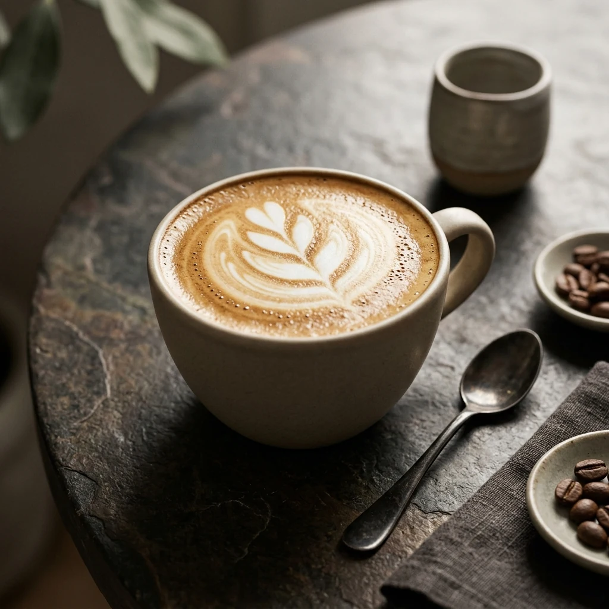
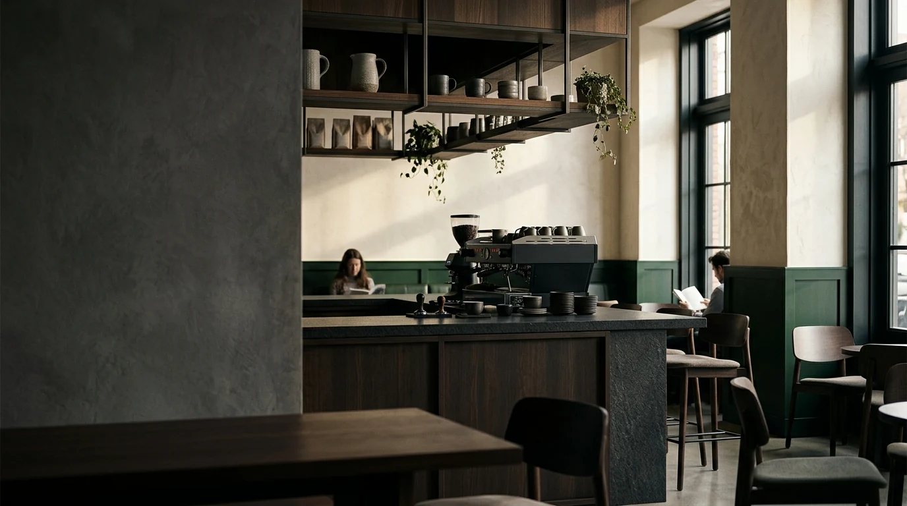
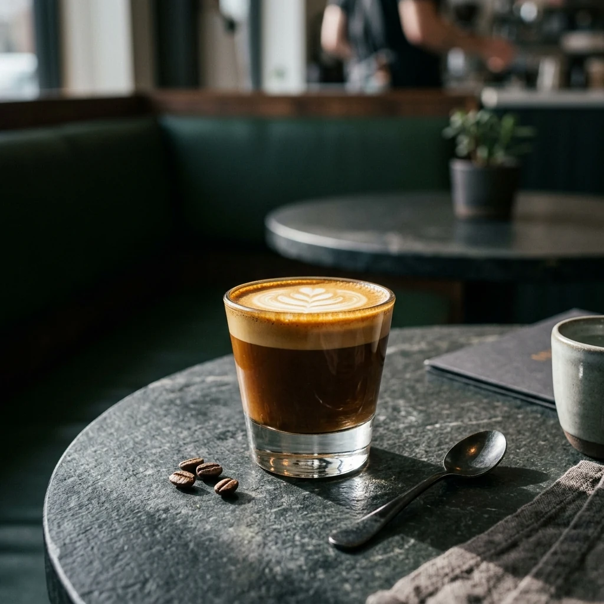
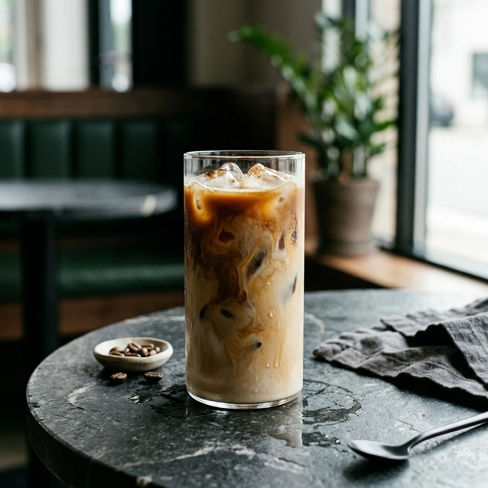

Small batch. Big character.
Coffee with a little more soul.
A neighborhood coffee house built around thoughtful roasting, seasonal plates, and slow moments worth staying for.
07 — 22Every day, fresh coffee and warm light.

OUR STORY
A calm place for good coffee.
We started with one simple idea: make everyday coffee feel like a ritual.
Read our storyNOIRÉ
Signature pours
A few favorites from the bar.

